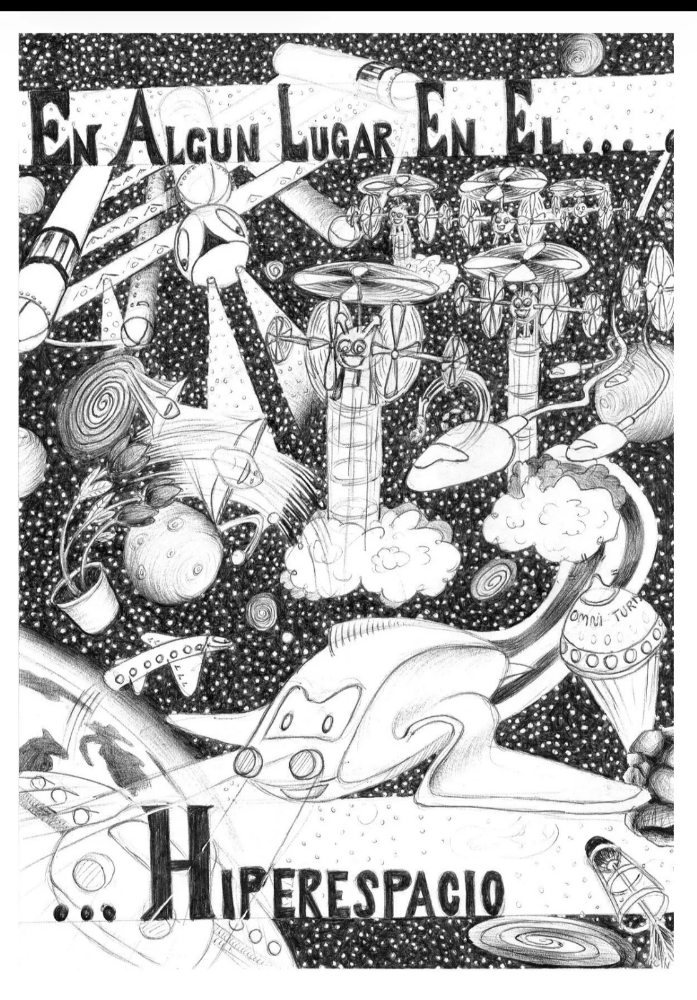
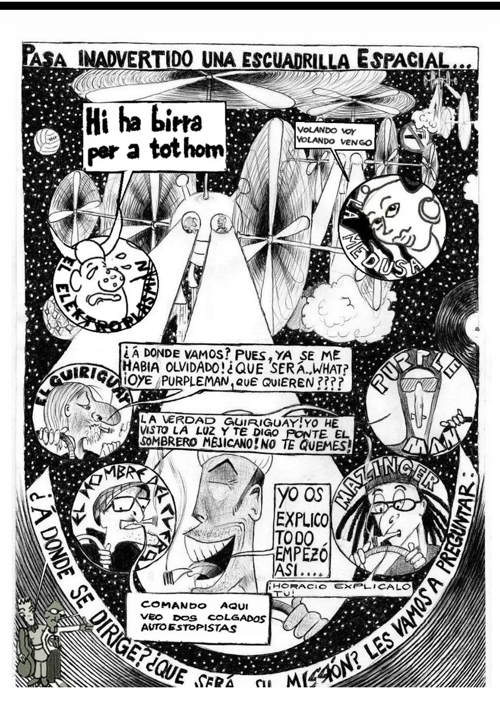
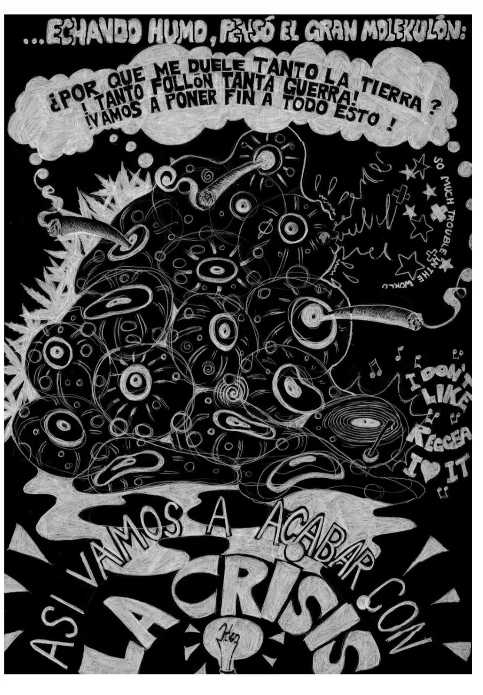
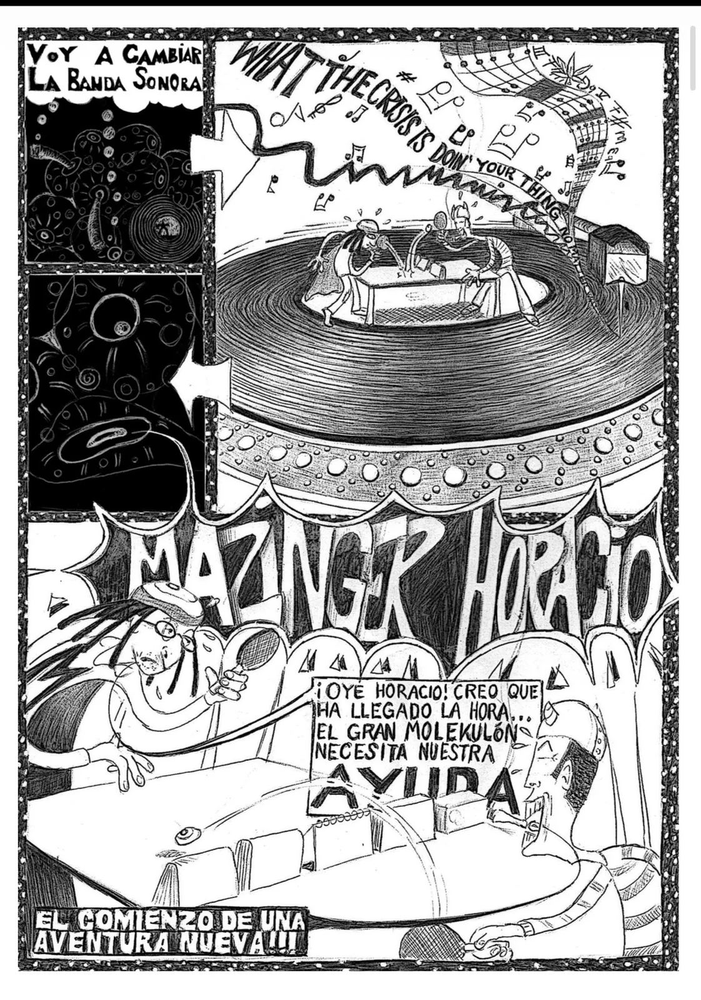

Un còmic que es llegeix amb música
Els dos números es van publicar amb el seu disc: cada pàgina té la seva cançó i es llegeixen alhora. Això d'aquí és una mostra, no el còmic sencer.
Comando Molekulon · el primer còmic
El Gran Molekulon mira la Terra i decideix que el que cal canviar no és el món: és la banda sonora. Envia Mazinguer i Horacio Motomachi a reclutar els cent cinquanta mil superherois que ja hi han nascut.




On es compra: pendent de dir-ho aquí.
Comando Molekulon · el segon còmic
La nau perd altura. No s'han quedat sense ganes: s'han quedat sense combustible. I enmig del caos apareix ell, oferint un paper higiènic molt més suau.
D'aquest encara no hi ha cap pàgina publicada. Quan hi siguin es llegiran aquí, una a una i cada una amb la seva cançó — que és com es va publicar en paper.
On es compra: pendent de dir-ho aquí.
Per què còmic i disc alhora
Cada personatge té la seva superarma, el seu vers i el seu tema. El dibuix i la música no il·lustren la història: en són la matèria, i separar-los deixa les dues meitats dient menys del que diuen juntes. A la pàgina de la banda hi ha les peces publicades, i a la pel·lícula, el guió que en surt.